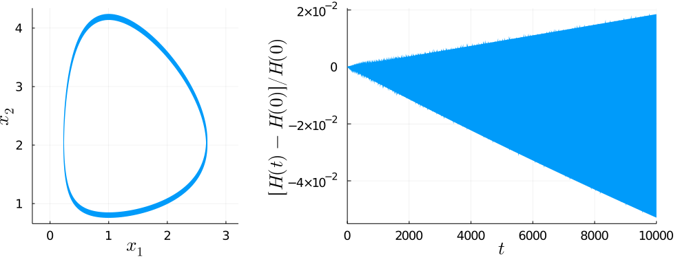
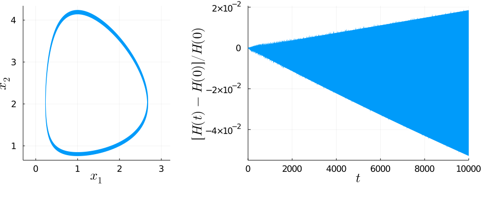

Lotka-Volterra 2d (singular Lagrangian) with Lobatto-IIIB-IIIA VPRK Integrators
LobattoIIIB2

LobattoIIIB3
DOMAIN ERROR: Simulation crashed in time step 530. 
LobattoIIIB4

LobattoIIIB5

DOMAIN ERROR: Simulation crashed in time step 530.

Settings
This document was generated with Documenter.jl on Monday 23 November 2020. Using Julia version 1.5.3.